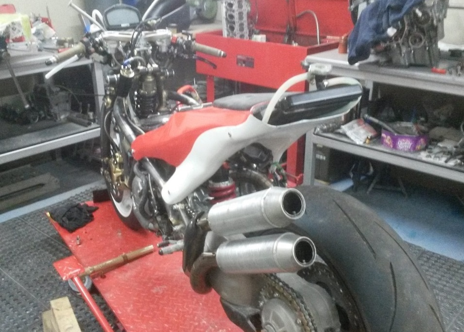

Why build a bike?
The history behind it
Back in 2012, a seed was planted in my mind that having ridden many modern bikes across club and national series I found I was lacking the ability to find the limits of the machines without first finding it by crashing. Something I did my fair share of in my early days of racing Ducati’s on some poor quality tyres the club would come by; taking homage of any discount offered regardless of quality. Reluctant to pursue a relentless story of refinement I started to think about what was missing. Not knowing much about anything but naively believing I did led me to thinking there was a relationship missing; the psychology of what was below me; if I believed it was capable, how faster could I go?
To go against the grain and start enjoying racing again I purchased a £900 VFR800 that had been pulled out of the sea in Southampton in 2012. My plan was to always build a frame but what it would look like and what materials were mere minor details; it would happen, in good time.
As the developments have progressed to this day; the only component I am still using from that bike is the fuel pump. The rest has been made by myself using prodomently manual machines and hand fabrication techniques or for the few components I have not tackled such as brake calipers, wheels and crank casings; I have sourced elsewhere.

The 1st build in Dec 2015
The business
A few years passed by where I persisted to run an engine tuning workshop and sub contract as an engineer to make up the 7 day working week, blindly making money like most of us I was doing my bit. I took the VFR in fairly standard trim; albeit with my own fairings, exhaust and mildly tuned engine to the southern 100 amongst many club races for 2 years along with a 2nd modern bike to keep my eye in whilst I developed the VFR. The modern bikes kept me sharp for a while until a daft crash at the southern in 2014. When lying 2 inches under the broken Connor Cummins in the chopper I decided that I was done with the boredom of modern racing; tired of the same 600’s and 1000’s being painted a different colour with excessively priced go faster extras. At the time I had spent some hefty money; nearly £8K on my 1 year old Triumph 675R which got me to 15th in the A 600 class without really trying. Not willing to blindly pursue a pre determined fate I threw my dummy out, no more pretending. At the same time I had learned that money wasn’t for me, life was for living. I am a big believer now that you are what you do and to a certain extent; what you look like too. If I was going to work all day, every day I would look like I had! If I only worked on everyone else’s bike I wouldn’t learn how to build a chassis. I've a dim view on education these days; it's for those who can’t do. Perhaps generations before mine depended on an education system as skills and information were so precious and harder to pass down. These days I believe we can all out perform any University degree with whats avaliable on line and some real motivation. The world's slowing waking up to this change but it's not likely to be published as it's a brilliant source of revenue for the government. So my ethos is to crack on and learn the hard way.
Getting stuck in

Developments in 2016
I returned from the Island and set about getting some T45 tube and some oxyacetylene and cracking on. Drying the sand and ramming it in to produce a hot bend took a lot of practice and I’d say 2 years of 10’s of bends to get that real feel for what’s going on. Every technical hurdle would spark a brief research through textbooks but something I was always adamant of was to stay away from any design or guidance that had been done before. If it exists I’m not interested in it. I needed to ensure my designs and philosophy was fresh and untainted. That way I felt my mind would have a greater chance of conjuring up something new which wasn’t a result of computer simulation pre-configured, logical algorithms which exist based on old theories (what’s the point – at best you would just be copying someone else!) In later years it would make my blood boil when someone would glance at the bike in the holding area and ask ‘what is it mate’, ‘is that a ducati swingarm’, ‘who’s are those fairings’. Knowing I was the underdog I had to be polite; ‘no, I made it all myself’. The following years have given me a massive understanding for metallurgy and thermal dynamics. 7 engines later and 3 rising rate suspension geometries have taught me huge amounts and testing at the Southern has accelerated the rate of learninng 10 fold. Take a look at the technical journeys across the site and maybe look out for upcoming events… you’ll hear it coming for sure!
So who am I?
So who am I? My name is Tom Parkes, I’m 31 at the time of writing this and have been building and racing my own chassis for 3 years now. The deeper I go, the more sense it makes; the big OEM’s are bound by performance metrics; fearful of research and design with professional rider’s balls bursting for success. Who would want to risk it all and fail like those that have come and gone before. Let someone else do the innovation and graft and the crafty ways of the east will pluck it like they did in the 70’s and spend the proceeding decades refining it! Despite not getting on the podium at the toughest race tracks in the world; I believe it’s very early days and unbeknown to most, I can see some real potential in it. At slower speeds it’s the best bike I’ve ever ridden; smooth but yet solid and compliant, with do whatever you want whilst your braking steering. Just don’t go too fast into corners, just not yet anyway!

Tom Parkes
I don't consider myself to be smart; just motivated and persistant to challenge convention. I'm actually not a massive fan of all things motorcycle. Most of the top racers live and breath bikes day and night. I don't keep upto date with national or international racers; I watch one or two GP's a year if I'm not too busy in the shed when the repeats are on. I don't watch much TV either. From March through to December I watch a few films at night but other than that; TV's just junk. The machining skills and fabrication ability is all learnt on the fly; typical old fashioned British arrogance really. My father used to scare me that gearbox's were the work of the devil and I should never open the box or I would be haunted for eternity. Once I rebuilt that gearbox when I was 20 on that old single cylinder BSA from the 60's I wasn't phased by anything, buying the tools and machines I needed to do the job. 10 years later I've almost convinced myself that anything Honda can do; I can do better.
Look out for other new projects
Keep an eye out for the new carbon fibre Parkes mountain bike project